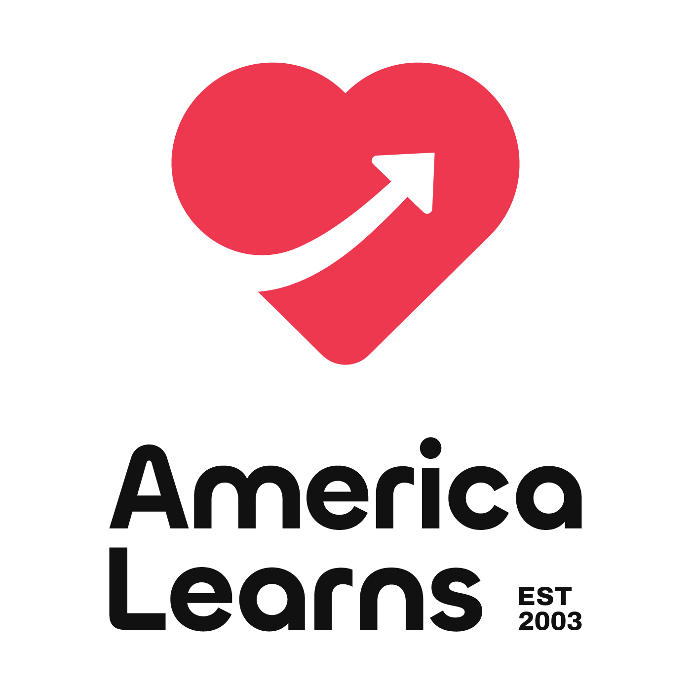

<!DOCTYPE html>
<html lang="en">
<head>
    <meta charset="UTF-8">
    <meta name="viewport" content="width=device-width, initial-scale=1.0">
    <title>AmericaLearns Security Navigator - Cybersecurity Assessment for Volunteer Programs</title>
    
    <script src="https://cdn.tailwindcss.com"></script>
    
    <link rel="preconnect" href="https://fonts.googleapis.com">
    <link rel="preconnect" href="https://fonts.gstatic.com" crossorigin>
    <link href="https://fonts.googleapis.com/css2?family=Inter:wght@400;500;600;700;800&display=swap" rel="stylesheet">
    
    <script src="https://cdnjs.cloudflare.com/ajax/libs/html2canvas/1.4.1/html2canvas.min.js"></script>
    <script src="https://cdnjs.cloudflare.com/ajax/libs/jspdf/2.5.1/jspdf.umd.min.js"></script>

    <style>
        body { font-family: 'Inter', sans-serif; }
        .transition-all { transition: all 0.3s ease-in-out; }
        .pdf-export-content { background-color: white !important; color: black !important; }
        
        /* Tooltip styles */
        .tooltip-trigger {
            cursor: help;
            text-decoration: underline;
            text-decoration-style: dotted;
            text-underline-offset: 2px;
            text-decoration-color: #3b82f6;
            color: inherit;
            position: relative;
        }
        
        .tooltip-trigger:hover {
            text-decoration-color: #1d4ed8;
        }
        
        .tooltip-content {
            position: absolute;
            bottom: 100%;
            left: 50%;
            transform: translateX(-50%);
            background: #1e293b;
            color: white;
            padding: 10px 14px;
            border-radius: 8px;
            font-size: 13px;
            line-height: 1.4;
            max-width: 400px;
            min-width: 250px;
            width: max-content;
            white-space: normal;
            z-index: 1000;
            opacity: 0;
            visibility: hidden;
            transition: all 0.2s ease;
            margin-bottom: 8px;
            box-shadow: 0 6px 20px rgba(0, 0, 0, 0.15);
            text-align: left;
        }
        
        .tooltip-content::after {
            content: '';
            position: absolute;
            top: 100%;
            left: 50%;
            transform: translateX(-50%);
            border: 6px solid transparent;
            border-top-color: #1e293b;
        }
        
        .tooltip-trigger:hover .tooltip-content {
            opacity: 1;
            visibility: visible;
        }
        
        /* Help icon style */
        .help-icon {
            display: inline-flex;
            align-items: center;
            justify-content: center;
            width: 16px;
            height: 16px;
            background: #3b82f6;
            color: white;
            border-radius: 50%;
            font-size: 11px;
            font-weight: bold;
            margin-left: 4px;
            cursor: help;
            position: relative;
        }
        
        .help-icon:hover {
            background: #1d4ed8;
        }
        
        /* Planning & Policy indicator */
        .planning-policy-icon {
            display: inline-flex;
            align-items: center;
            color: #6366f1;
            margin-left: 8px;
            position: relative;
        }
        
        .planning-policy-icon .tooltip-content {
            bottom: 150%;
            left: 50%;
            transform: translateX(-50%);
            margin-bottom: 4px;
            font-size: 12px;
            white-space: nowrap;
            max-width: 200px;
        }
    </style>
</head>
<body class="bg-gray-100">

    <div id="app"></div>

    <script type="module">
        // --- DATA AND STATE MANAGEMENT ---
        let state = {
            view: 'welcome', // 'welcome', 'assessment' or 'report'
            userMaturity: {}, // e.g., { 'system-inventory': 'beginner' }
            selectedCategory: 'All',
        };

        // --- TECHNICAL TERMS GLOSSARY ---
        const glossary = {
            'MFA': 'Multi-Factor Authentication - An extra security step that requires something you know (password) plus something you have (like a code from your phone)',
            'Multi-Factor Authentication': 'An extra security step that requires something you know (password) plus something you have (like a code from your phone)',
            'SPF': 'Sender Policy Framework - A security setting that proves your emails are legitimate by listing which servers can send email for your domain',
            'DKIM': 'DomainKeys Identified Mail - Adds a digital signature to your emails to prove they haven\'t been tampered with',
            'DMARC': 'Domain-based Message Authentication - Tells other email servers what to do with fake emails pretending to be from you',
            'Encryption': 'Scrambling data so only authorized people with the right "key" can read it - like a digital lock',
            'Antivirus': 'Software that protects your computer from malicious programs (viruses, malware)',
            'NGAV': 'Next-Generation Antivirus - Modern antivirus that uses advanced techniques to catch new threats',
            'EDR': 'Endpoint Detection and Response - Advanced security that monitors device behavior and can automatically respond to threats',
            'XDR': 'Extended Detection and Response - Security that monitors across your entire organization, not just individual devices',
            'Passkeys': 'A modern, passwordless way to log in using your device\'s built-in security (like Face ID or fingerprint)',
            'Zero Trust': 'A security approach that assumes no one should be trusted by default - every access request must be verified',
            'AI-Powered Security': 'Security tools that use artificial intelligence to detect unusual patterns and threats',
            'Immutable Backups': 'Backups that cannot be changed or deleted, even by ransomware or malicious insiders',
            '3-2-1-1 Backup Rule': 'Modern backup strategy: 3 copies of data, 2 different storage types, 1 offsite, 1 immutable/offline',
            'Supply Chain Attack': 'When hackers compromise a vendor or service you use to get to your organization',
            'Security Posture': 'Your overall security health - how well protected your organization is against threats',
            'Phishing': 'Fake emails or messages trying to trick you into giving away passwords or sensitive information',
            'Ransomware': 'Malicious software that locks your files and demands payment to unlock them',
            'Risk Register': 'A document listing potential security problems, how likely they are, and what you\'re doing about them',
            'Business Impact Analysis': 'A process to identify which parts of your work are most critical and what would happen if they stopped working',
            'RTO': 'Recovery Time Objective - How quickly you need to get back up and running after an incident',
            'RPO': 'Recovery Point Objective - How much data you can afford to lose (e.g., can you lose a day\'s work?)',
            'Endpoint': 'Any device that connects to your network - laptops, desktops, phones, tablets',
            'Cloud Services': 'Software and storage accessed over the internet (like Google Drive, Microsoft 365)',
            'Two-Factor Authentication': 'Same as MFA - requires two different ways to prove who you are',
            '2FA': 'Short for Two-Factor Authentication',
            'GDPR': 'General Data Protection Regulation - European privacy law that protects personal data',
            'CCPA': 'California Consumer Privacy Act - California\'s privacy law protecting consumer data',
            'HIPAA': 'Health Insurance Portability and Accountability Act - U.S. law protecting health information',
            'Vulnerability': 'A weakness in your systems that could be exploited by attackers',
            'Patch': 'A software update that fixes security problems or bugs',
            'Firewall': 'A security barrier that controls what internet traffic can enter or leave your network',
            'VPN': 'Virtual Private Network - Creates a secure, encrypted connection over the internet',
            'Access Control': 'Rules about who can see or use different systems and data',
            'Least Privilege': 'Giving people only the minimum access they need to do their job'
        };

        // --- HELPER FUNCTION TO ADD TOOLTIPS ---
        function addTooltip(text, term) {
            return `<span class="tooltip-trigger">${text}<span class="tooltip-content">${glossary[term] || term}</span></span>`;
        }

        const controlsData = {
          // GOVERN
          'cybersecurity-roles': { name: 'Cybersecurity Roles & Responsibilities', category: 'Govern', tier: 'beginner', quickWin: true, description: 'Clearly define who is responsible for cybersecurity decisions and tasks.', why: 'Without clear ownership, security tasks fall through the cracks. This ensures accountability.', maturityLevels: { 
              'not-in-place': { title: 'Not in Place', description: "No one is formally assigned to oversee cybersecurity.", remediation: { steps: ["Identify a staff member who can act as the lead for security issues, even informally.", "Ask them if they are willing to be the point person for security questions.", "Announce this informal role to the team so everyone knows who to ask for help."], successMetric: "An individual is informally recognized as the point of contact for cybersecurity, achieving the 'Informal Assignment' level.", support: "**Next Steps:** Discuss in your next management meeting. **Ask Your IT Provider:** 'Can you help us understand what technical tasks our security point person should oversee?' **Don't Have an IT Provider?** Contact AmericaLearns at support@americalearns.net for sample role descriptions and guidance on finding the right person." } }, 
              'beginner': { title: 'Informal Assignment', description: "An Executive Director or IT-savvy person handles issues as they arise.", remediation: { steps: ["Formally document the cybersecurity responsibilities in the designated person's job description.", "Ensure the role includes coordination, decision-making, and escalating issues to AmericaLearns support when needed.", "Ensure leadership communicates this formal role and its authority to all staff."], successMetric: "Cybersecurity responsibilities are documented and formally assigned to a specific role, achieving the 'Defined Roles' level.", support: "Human Resources or AmericaLearns can help you add the right language to a job description. Your IT provider can help clarify the technical tasks the role should oversee." } }, 
              'intermediate': { title: 'Defined Roles', description: "Specific roles for cybersecurity oversight and tasks are documented and understood." } 
            }},
          'security-policy': { name: 'Information Security Policy', category: 'Govern', tier: 'intermediate', quickWin: true, description: 'Create a simple, written document outlining your organization\'s rules for protecting data.', why: 'A policy sets clear expectations for staff and demonstrates due diligence to funders and partners.', maturityLevels: { 
              'not-in-place': { title: 'Not in Place', description: "No written security policy exists.", remediation: { steps: ["Start with a simple 'Acceptable Use' document. List 3-5 core rules like 'lock your computer' and 'use strong passwords'.", "Discuss these guidelines in a team meeting to build awareness.", "Post the guidelines in a shared location. This is the first step towards the comprehensive policy described in the AmericaLearns Security Guide."], successMetric: "A set of informal security guidelines exists and has been discussed with staff, achieving the 'Informal Guidelines' level.", support: "**Getting Started:** Create a simple document listing 5 basic rules (lock computers, use strong passwords, don't share logins, report suspicious emails, protect client data). **Ask Your IT Provider:** 'What technical security settings should we include in our policy?' **Templates Available:** AmericaLearns provides policy templates you can customize - contact us at support@americalearns.net." } }, 
              'beginner': { title: 'Informal Guidelines', description: "Unwritten rules and best practices are occasionally discussed.", remediation: { steps: ["Use your informal guidelines as a base to develop a comprehensive Technology and Data Policy as outlined in the AmericaLearns Security Guide (Part II, Section 5).", "Ensure the policy is reviewed by your leadership and/or legal counsel.", "Secure formal approval from executive leadership.", "Communicate the new policy to all staff and require a digital signature to acknowledge receipt and understanding."], successMetric: "A board-approved Information Security Policy is adopted, formally acknowledged by all staff, and stored centrally, achieving the 'Approved Policy' level.", support: "Refer to Part II, Section 5 of the AmericaLearns Security Guide for core components. Ask AmericaLearns for an official policy template you can adapt. Your IT provider can help you implement technical procedures mentioned in the policy." } }, 
              'intermediate': { title: 'Approved Policy', description: "A board-approved policy covering key areas like data handling and access control is in place and reviewed annually." } 
            }},
          'risk-assessment': { name: 'Risk Assessment', category: 'Govern', tier: 'intermediate', description: 'Modern risk assessment including AI threats, supply chain, and remote work risks.', why: 'The threat landscape changed dramatically in 2024. Traditional risk assessments miss AI-powered attacks and third-party vulnerabilities.', maturityLevels: {
                'not-in-place': { title: 'Not in Place', description: "No process to identify modern threats.", remediation: { steps: ["List your 'Crown Jewels' - data that would shut down operations if lost (donor database, financial records).", "Consider 2025's top threats: business email compromise, password compromise, unpatched systems, risky vendors, insider threats.", "For each threat, rate impact (1-5) and likelihood (1-5) to prioritize.", "Don't forget: your biggest risk might be that one vendor with weak security."], successMetric: "Initial risk discussion covering modern threats completed, achieving the 'Risk Aware' level.", support: "**2025 Top Risks for Nonprofits:** 1) Business email compromise, 2) Password compromise from poor password practices (password reuse, shared accounts), 3) Exploits through unpatched systems, 4) Risky vendor practices, 5) Insider threat from departing employee. Use these as discussion starters." } },
                'beginner': { title: 'Risk Aware', description: "Basic understanding of risks but no formal process.", remediation: { steps: ["Use a modern risk framework that includes: AI threats, supply chain, remote work, and climate risks.", "Create a Risk Register with: risk description, owner, likelihood, impact, and mitigation status.", "Include 'emerging risks' section for threats like deepfakes and quantum computing.", "Review quarterly (not annually) - the threat landscape changes too fast for annual reviews."], successMetric: "Formal risk register with quarterly reviews and modern threat coverage, achieving the 'Proactive Management' level.", support: "**2025 Framework:** NIST CSF 2.0 now includes supply chain and AI considerations. **Free Tool:** CISA's Cyber Resilience Review has nonprofit-specific modules. **Quick Win:** Focus on your top 5 risks - perfect is the enemy of done." } },
                'intermediate': { title: 'Proactive Management', description: "Quarterly risk assessments with modern threat intelligence integration and board-level reporting." }
            }},
          'data-privacy-security': { name: 'AmeriCorps Compliance & Data Privacy', category: 'Govern', tier: 'intermediate', description: 'Meet AmeriCorps requirements and protect volunteer/participant data according to federal guidelines.', why: 'AmeriCorps programs must comply with federal privacy laws, and governor offices require specific security measures for grant recipients.', maturityLevels: {
                'not-in-place': { title: 'Not in Place', description: "Unaware of AmeriCorps-specific security and privacy requirements.", remediation: { steps: ["Review AmeriCorps Terms and Conditions for data security requirements.", "Identify sensitive data you collect: SSNs for background checks, volunteer health info, participant data.", "Check if you handle: criminal history records (requires special protection), youth data (COPPA), health screening data (HIPAA).", "Document which federal and state regulations apply to your program."], successMetric: "AmeriCorps compliance requirements identified and documented, achieving the 'Requirements Known' level.", support: "**AmeriCorps Specific:** Criminal history checks require secure storage and limited access. **State Requirements:** Contact your state commission for additional requirements. **Quick Reference:** AmericaLearns maintains an AmeriCorps compliance checklist at support@americalearns.net." } },
                'beginner': { title: 'Requirements Known', description: "Aware of requirements but lacking formal compliance processes.", remediation: { steps: ["Implement AmeriCorps-required data retention schedules (typically 3-7 years).", "Create access controls for criminal history records - only designated staff.", "Establish secure transmission methods for sensitive volunteer data.", "Document your privacy practices for grant reporting.", "Train all staff on handling volunteer personal information."], successMetric: "Formal AmeriCorps compliance processes implemented and documented, achieving the 'Compliant Program' level.", support: "**Grant Reporting:** Many state commissions now require security attestations in progress reports. **Best Practice:** Use your volunteer management system's built-in compliance features. **Templates:** AmericaLearns provides AmeriCorps-specific policy templates." } },
                'intermediate': { title: 'Compliant Program', description: "Full compliance program meeting AmeriCorps and applicable federal requirements with annual reviews." }
            }},
          // IDENTIFY
          'system-inventory': { name: 'Hardware & Software Inventory', category: 'Identify', tier: 'beginner', quickWin: true, description: 'Keep a current list of all your technology: computers, software, and cloud services.', why: "You can't protect what you don't know you have. This list is your technology map.", maturityLevels: { 
              'not-in-place': { title: 'Not in Place', description: "No formal list of systems exists.", remediation: { steps: ["Create a simple spreadsheet for your inventory.", "Start by listing all organization-owned computers and mobile devices.", "Add the 3-5 most critical software or cloud services your team uses (e.g., Microsoft 365, accounting software, CRM)."], successMetric: "A basic list of the organization's major hardware and software systems is created, achieving the 'Basic List' level.", support: "**Who Can Help:** Ask your admin staff or most tech-savvy team member to create this list. **Ask Your IT Provider:** 'Can you provide us with a list of all computers and software you manage for us?' **Templates Available:** AmericaLearns provides a simple inventory spreadsheet template - contact us at support@americalearns.net." } }, 
              'beginner': { title: 'Basic List', description: "A simple list of major systems is maintained.", remediation: { steps: ["Expand your inventory to meet the 'Asset Identification' standard in the AmericaLearns Security Guide (Part III, Section 8).", "For each item, add key details like who uses it, its business purpose, and if it stores sensitive data.", "Schedule a quarterly calendar reminder to review and update the inventory.", "Use the list to identify and plan for removal of any old or unsupported software."], successMetric: "A detailed inventory of hardware, software, and data assets is actively maintained and updated quarterly, achieving the 'Detailed Inventory' level.", support: "Your IT provider can help run automated scans to find software on your network. For classifying data, involve program managers who know what kind of information they handle. Refer to the AmericaLearns Security Guide for guidance on data classification." } }, 
              'intermediate': { title: 'Detailed Inventory', description: "A detailed inventory of hardware and software is maintained and updated at least quarterly." } 
            }},
          'data-inventory': { name: 'Data Inventory & Classification', category: 'Identify', tier: 'beginner', quickWin: true, description: 'Know what personal and sensitive data you collect, where it is, and who has access.', why: 'This helps you understand your privacy obligations and focus protection efforts on what matters most.', maturityLevels: { 
              'not-in-place': { title: 'Not in Place', description: "Unsure what specific sensitive data is held.", remediation: { steps: ["Hold a 30-minute meeting to brainstorm the types of sensitive data you handle (e.g., donor details, client PII).", "Make a simple list of these data types, focusing on WHAT you have before worrying about where it is.", "Reference the 'Data Privacy & Security' section of the AmericaLearns Security Guide to understand data categories."], successMetric: "The organization has a general understanding of the sensitive data it holds, achieving the 'General Idea' level.", support: "This is a group exercise for program and administrative staff. Consider volunteer data, participant information, background check results, and grant reporting data as starting points for your discussion." } }, 
              'beginner': { title: 'General Idea', description: "A general idea of sensitive data exists, but no formal documentation.", remediation: { steps: ["Create a 'Data Map' spreadsheet, as described in the AmericaLearns Security Guide's section on Data Privacy.", "For each type of sensitive data identified, document where it's stored (e.g., a specific folder, a cloud service).", "Add columns to note who has access to this data and why.", "Review this map with leadership to ensure it is accurate and informs your access control reviews."], successMetric: "A formal data map exists that documents sensitive data types, locations, and access controls, achieving the 'Data Map' level.", support: "Your program managers are key to this task, as they know their data best. Your IT provider can help identify storage locations on servers or cloud platforms. **Templates Available:** AmericaLearns provides a data inventory and classification spreadsheet template - contact us at support@americalearns.net." } }, 
              'intermediate': { title: 'Data Map', description: "A map of sensitive data, its location, and access controls is maintained and reviewed annually." } 
            }},
          // PROTECT
          'multi-factor-authentication': { name: `Multi-Factor Authentication (${addTooltip('MFA', 'MFA')}) & ${addTooltip('Passkeys', 'Passkeys')}`, category: 'Protect', tier: 'beginner', description: 'Add a second layer of security to your logins, or use modern passwordless options.', why: 'In 2025, this remains the #1 defense against account takeovers. Passkeys are even more secure and easier to use than traditional MFA.', maturityLevels: { 
              'not-in-place': { title: 'Not in Place', description: "No MFA or passkeys are used for any systems.", remediation: { steps: ["Enable MFA on your most critical account first - likely your primary email service (Microsoft 365 or Google Workspace).", "For 2025: Consider passkeys if your systems support them - they're easier for staff and more secure than codes.", "Use an authenticator app (Microsoft Authenticator, Google Authenticator) rather than SMS texts - texts can be intercepted.", "Start with leadership accounts, then expand to all staff within 30 days."], successMetric: "MFA or passkeys are enabled on at least one critical system, achieving the 'Getting Started' level.", support: "**Quick Start:** Google Workspace and Microsoft 365 now support passkeys - this is the easiest option for non-technical users. **Ask Your IT Provider:** 'Can you help us enable passkeys or MFA for all our accounts?' **Free Resources:** Both Google and Microsoft offer free MFA apps that work with most services." } }, 
              'beginner': { title: 'Getting Started', description: "MFA is enabled but not consistently used or enforced.", remediation: { steps: ["Make MFA mandatory for ALL cloud services - in 2025, optional MFA is not sufficient.", "Deploy passkeys where supported (Gmail, Microsoft, Apple, etc.) for easier adoption.", "Use conditional access policies to require MFA based on risk (new location, new device).", "Implement single sign-on (SSO) to reduce the number of times staff need to authenticate."], successMetric: "MFA or passkeys are required and enforced for all staff on all cloud systems, achieving the 'Fully Protected' level.", support: "**2025 Best Practice:** Passkeys are now widely supported and eliminate 'MFA fatigue'. Your IT provider can help implement SSO to make this easier for staff. **Budget Option:** Use free authenticator apps with backup codes stored in your password manager." } }, 
              'intermediate': { title: 'Fully Protected', description: "MFA is enforced everywhere, with passkeys deployed where possible, and risk-based authentication in use." } 
            }},
          'password-management': { name: `Password Management & ${addTooltip('Passkeys', 'Passkeys')}`, category: 'Protect', tier: 'intermediate', description: 'Modern credential management using password managers and passwordless authentication.', why: 'In 2025, 80% of breaches still involve compromised credentials. Password managers and passkeys eliminate this risk.', maturityLevels: { 
              'not-in-place': { title: 'Not in Place', description: "Passwords are reused, weak, or stored insecurely.", remediation: { steps: ["Stop all password sharing immediately - in 2025, this is a critical vulnerability.", "Require 16+ character passwords or passphrases (2025 standard, up from 12).", "Speak to your technical provider or AmericaLearns about deploying a password manager.", "Begin transitioning to passkeys for major services (Google, Microsoft, Apple)."], successMetric: "Password manager is deployed and passkeys are used for at least one service, achieving the 'Getting Started' level.", support: "**2025 Free Options:** Bitwarden for nonprofits, Google Password Manager, Apple Keychain. **Immediate Action:** Check haveibeenpwned.com to see if any organizational emails have been in breaches." } }, 
              'beginner': { title: 'Getting Started', description: "Some staff use password managers but it's not universal.", remediation: { steps: ["Make password manager use mandatory with admin-enforced policies.", "Enable passwordless authentication (passkeys) wherever possible.", "Implement leaked password monitoring and forced resets.", "Use SSO with your password manager to reduce password fatigue."], successMetric: "100% of staff use managed password vaults with monitoring, achieving the 'Fully Managed' level.", support: "**2025 Tip:** Passkeys eliminate password fatigue - prioritize them for your most-used services. **Integration:** Modern password managers integrate with your IdP (Identity Provider) for seamless SSO." } }, 
              'intermediate': { title: 'Fully Managed', description: "Enterprise password management with SSO integration, passkeys deployed, and continuous credential monitoring." } 
            }},
          'endpoint-security': { name: `${addTooltip('Endpoint', 'Endpoint')} Security (${addTooltip('EDR', 'EDR')}/${addTooltip('XDR', 'XDR')})`, category: 'Protect', tier: 'intermediate', description: 'Modern protection for all devices that goes beyond traditional antivirus.', why: 'In 2025, traditional antivirus catches only 30-40% of threats. EDR/XDR can detect and stop advanced attacks that antivirus misses.', maturityLevels: { 
              'not-in-place': { title: 'Not in Place', description: "Devices lack modern security protections.", remediation: { steps: ["Enable built-in protections: Windows Defender (now Microsoft Defender) or macOS security features.", "Set automatic screen lock to 5 minutes (2025 standard, down from 15).", "Enable automatic updates - unpatched devices are the #1 vulnerability in 2025.", "For mobile devices: Enable biometric locks and remote wipe capabilities."], successMetric: "Basic 2025 protections (auto-updates, screen locks, built-in security) are active on all devices, achieving the 'Basic Protection' level.", support: "**2025 Reality Check:** Traditional antivirus alone is insufficient. **Quick Win:** Enable Microsoft Defender's free EDR capabilities on Windows Pro/Enterprise. **Mobile Devices:** Use your MDM (Mobile Device Management) or free options like Microsoft Intune for BYOD." } }, 
              'beginner': { title: 'Basic Protection', description: "Devices have basic security but lack modern threat detection.", remediation: { steps: [`Deploy ${addTooltip('EDR', 'EDR')} solution - many are now affordable for nonprofits (Microsoft Defender for Business is ~$3/user/month).`, `Enable ${addTooltip('Zero Trust', 'Zero Trust')} device compliance - devices must meet security standards before accessing data.`, `Implement application control - block unauthorized software installations.`, `Enable full-disk ${addTooltip('encryption', 'Encryption')} and remove local admin rights from all users.`], successMetric: `Modern EDR protection with behavioral monitoring is deployed on all devices, achieving the 'Modern Protection' level.`, support: `**2025 Nonprofit Options:** Microsoft offers nonprofit discounts on Defender for Business. CrowdStrike and SentinelOne have nonprofit programs. **Budget Alternative:** At minimum, upgrade to Windows 11/macOS Ventura for improved built-in security.` } }, 
              'intermediate': { title: 'Modern Protection', description: "All devices have EDR/XDR protection, encryption, compliance checking, and centralized management." } 
            }},
          'security-awareness-training': { name: 'Security Awareness Training', category: 'Protect', tier: 'intermediate', description: `Train staff on modern threats including AI-generated ${addTooltip('phishing', 'Phishing')} and deepfakes.`, why: 'In 2025, AI makes phishing emails nearly perfect. Traditional "look for typos" training is obsolete - staff need new skills.', maturityLevels: {
                'not-in-place': { title: 'Not in Place', description: "No security training addressing modern threats.", remediation: { steps: ["Share examples of AI-generated phishing - staff need to see how convincing they are.", "Teach the 'verify through a different channel' rule for any unusual requests.", "Implement a 'no shame' reporting culture - anyone can fall for AI phishing.", "Start monthly 5-minute security moments in team meetings.", "All staff attend an annual cybersecurity awareness training."], successMetric: "Regular security discussions include AI threats and verification procedures, achieving the 'Basic Awareness' level.", support: "**2025 Reality:** AI phishing can perfectly mimic your CEO's writing style. **Free Resource:** Google's Jigsaw project offers free phishing quiz updated for AI threats. **Key Message:** When in doubt, call or text to verify - don't trust email alone." } },
                'beginner': { title: 'Basic Awareness', description: "Some training exists but doesn't address AI-era threats.", remediation: { steps: ["Deploy modern security awareness platform with AI-threat modules (many now include this).", "Run AI-enhanced phishing simulations that adapt to each user's weaknesses.", "Include deepfake awareness - train staff to verify video/audio calls.", "Gamify training with rewards for reporting suspicious activity."], successMetric: "All staff complete AI-era security training with adaptive testing, achieving the 'Modern Training Program' level.", support: "**2025 Platforms:** KnowBe4, Proofpoint, and Mimecast now include AI-threat modules. **For Questions:** Speak with AmericaLearns for any questions about ongoing cybersecurity awareness training services. **Critical Skill:** Train staff to always verify wire transfers and sensitive requests via phone." } },
                'intermediate': { title: 'Modern Training Program', description: "Comprehensive AI-era training with continuous reinforcement, adaptive testing, and real-time threat updates." }
            }},
          'email-security': { name: `Email Security (${addTooltip('SPF', 'SPF')}, ${addTooltip('DKIM', 'DKIM')}, ${addTooltip('DMARC', 'DMARC')})`, category: 'Protect', tier: 'intermediate', description: 'Implement email authentication standards to prevent spoofing and improve deliverability.', why: 'These records prove your emails are legitimate, protecting your reputation and reducing the chance of your messages being marked as spam.', maturityLevels: {
                'not-in-place': { title: 'Not in Place', description: "No email authentication records are published.", remediation: { steps: ["Identify all the services you use to send email on behalf of your domain (e.g., Google Workspace, Mailchimp, Salesforce).", "Create a basic SPF record listing these senders, as described in the AmericaLearns Security Guide.", "Publish the SPF record in your domain's DNS settings."], successMetric: "A basic SPF record is published for your domain, achieving the 'SPF Implemented' level.", support: "**Who Does This:** Your IT provider or whoever manages your website domain. **What to Say:** 'We need to set up SPF records for our domain. Here's our list of email services: [your list].' Share AmericaLearns Security Guide Part V, Section 12 with them. **Need Help?** AmericaLearns can guide your provider - have them contact us at support@americalearns.net." } },
                'beginner': { title: 'SPF Implemented', description: "An SPF record is in place for your domain.", remediation: { steps: ["Implement DKIM for your primary mail server to add a digital signature to your emails.", "Create and publish a DMARC record, starting in monitoring mode (p=none).", "Monitor DMARC reports to ensure legitimate emails are authenticating correctly.", "Gradually move your DMARC policy to 'quarantine' and then 'reject' to block fraudulent emails."], successMetric: "SPF, DKIM, and a DMARC enforcement policy (quarantine or reject) are fully implemented, achieving the 'DMARC Enforced' level.", support: "**This requires technical expertise.** Work with your IT provider to implement these changes incrementally. Misconfiguration can affect email delivery, so it's important to have expert help. AmericaLearns can connect you with resources if needed." } },
                'intermediate': { title: 'DMARC Enforced', description: "SPF, DKIM, and a DMARC policy of 'quarantine' or 'reject' are in place." }
            }},
          'data-backup': { name: `Data Backup (${addTooltip('3-2-1-1 Backup Rule', '3-2-1-1 Backup Rule')})`, category: 'Protect', tier: 'beginner', description: 'Modern backup strategy with ransomware-resistant protections.', why: `With ransomware attacks up 400% since 2023, ${addTooltip('immutable backups', 'Immutable Backups')} are now essential, not optional.`, maturityLevels: {
                'not-in-place': { title: 'Not in Place', description: "No automated backup strategy exists.", remediation: { steps: ["Enable versioning in your cloud storage (OneDrive/Google Drive) - this provides basic ransomware protection.", "Set up automated daily backups of critical data to the cloud.", "Implement the first '3' of 3-2-1-1: Keep 3 copies of important data.", "Enable 'recycle bin' or 'trash' protection with 30-day retention."], successMetric: "Automated cloud backups with versioning are running daily, achieving the 'Basic Backup' level.", support: "**2025 Quick Win:** Both Microsoft 365 and Google Workspace now include basic backup features - ensure they're turned ON. **Ransomware Protection:** Enable version history to recover from encryption attacks." } },
                'beginner': { title: 'Basic Backup', description: "Cloud backups exist but don't follow modern best practices.", remediation: { steps: ["Implement full 3-2-1-1 rule: 3 copies, 2 different media types, 1 offsite, 1 immutable/air-gapped.", "Add a second backup destination (e.g., if using Google Drive, add Backblaze or similar).", "Enable immutable backups that can't be deleted for 30+ days.", "Test recovery quarterly and document results."], successMetric: "Full 3-2-1-1 backup strategy with immutable copies and quarterly testing, achieving the 'Ransomware-Ready' level.", support: "**2025 Affordable Options:** Backblaze ($7/computer/month), Wasabi ($6/TB/month), or Azure Backup with nonprofit discounts. **Critical:** Ensure at least one backup is immutable (can't be deleted by ransomware)." } },
                'intermediate': { title: 'Ransomware-Ready', description: "3-2-1-1 strategy implemented with immutable backups, automated testing, and documented recovery procedures." }
            }},
          'data-destruction': { name: 'Data & Equipment Disposal', category: 'Protect', tier: 'intermediate', description: 'Securely delete data and dispose of old hardware that is no longer needed.', why: 'Improperly discarded data can be recovered, leading to a breach. This ensures data is gone for good.', maturityLevels: {
                'not-in-place': { title: 'Not in Place', description: "Old hardware is stored indefinitely or thrown away without wiping.", remediation: { steps: ["Stop throwing away any old IT equipment.", "For the next computer being retired, perform a 'factory reset' to delete files before disposal.", "Commit to doing this for all future disposals."], successMetric: "Files are deleted from devices before disposal, though not necessarily wiped securely, achieving the 'Basic Deletion' level.", support: "This is an immediate, easy-to-implement policy. You can find instructions for performing a factory reset by searching online for your computer model." } },
                'beginner': { title: 'Basic Deletion', description: "Files are deleted, but drives are not securely wiped.", remediation: { steps: ["Create a formal 'Hardware Offboarding Checklist' as recommended in the AmericaLearns Security Guide.", "Include required steps to sign out of all accounts and use a tool to securely wipe (not just delete) the hard drive.", "Designate a person responsible for managing this process.", "Research and identify a certified e-waste recycling vendor for disposal."], successMetric: "A formal process and checklist exist to securely wipe and dispose of old hardware, achieving the 'Secure Disposal Process' level.", support: "Your IT provider can securely wipe devices for you or recommend software to do so. **Templates Available:** AmericaLearns provides a hardware disposal checklist template - contact us at support@americalearns.net." } },
                'intermediate': { title: 'Secure Disposal Process', description: "A process exists to securely wipe hard drives and properly dispose of or recycle old hardware." }
            }},
          'volunteer-access-management': { name: 'Volunteer & Staff Turnover Management', category: 'Protect', tier: 'beginner', quickWin: true, description: 'Manage access for volunteers and staff in high-turnover environments.', why: 'With volunteer programs experiencing 30-50% annual turnover and recent DOGE-related staff changes, orphaned accounts are your biggest vulnerability.', maturityLevels: {
                'not-in-place': { title: 'Not in Place', description: "No formal process for removing access when volunteers/staff leave.", remediation: { steps: ["Create a simple 'Exit Checklist' that includes: collect devices, reset passwords, remove from email lists, revoke system access.", "Identify all systems where volunteers have accounts (email, file sharing, databases).", "Document who is responsible for each deprovisioning step.", "Start using this checklist immediately for the next departure."], successMetric: "Exit checklist created and used for all departures, achieving the 'Basic Process' level.", support: "**AmeriCorps Tip:** Many programs forget about: shared drive access, mailing list subscriptions, and database logins. **Quick Win:** Start with email and file access - these are the highest risk." } },
                'beginner': { title: 'Basic Process', description: "Manual checklist exists but process is inconsistent.", remediation: { steps: ["Move to a 'Zero Trust' volunteer model - assume all volunteers are temporary.", "Implement time-limited access (e.g., 6-month expiration) requiring renewal.", "Use volunteer management software that integrates with your IT systems.", "Create separate volunteer accounts that are clearly labeled and have limited permissions.", "Conduct quarterly access reviews to find orphaned accounts."], successMetric: "Time-limited access and quarterly reviews implemented, achieving the 'Managed Turnover' level.", support: "**2025 Best Practice:** Use your volunteer management system as the 'source of truth' - when someone is marked inactive there, access should automatically expire. **Tools:** Google Workspace and Microsoft 365 both support automatic expiration dates." } },
                'intermediate': { title: 'Managed Turnover', description: "Automated systems handle most access changes with regular audits catching exceptions." }
            }},
          // MONITOR
          'system-monitoring': { name: 'Cloud Security Monitoring', category: 'Monitor', tier: 'intermediate', description: 'Modern monitoring for cloud services and SaaS applications where your data lives.', why: 'In 2025, attacks happen in minutes, not days. Without monitoring, the average nonprofit discovers breaches 6 months later - far too late.', maturityLevels: {
                'not-in-place': { title: 'Not in Place', description: "No visibility into cloud security events.", remediation: { steps: ["Turn ON security alerting in Microsoft 365 or Google Workspace admin console.", "Enable 'impossible travel' alerts - logins from two distant locations quickly.", "Set up alerts for: new admin accounts, mass downloads, external sharing.", "Designate someone to receive and review these alerts daily."], successMetric: "Basic cloud security alerts enabled and reviewed regularly, achieving the 'Alerts Enabled' level.", support: "**Microsoft 365:** Security.microsoft.com → Settings → Email notifications. **Google Workspace:** admin.google.com → Security → Alert center. **Critical Alert:** Any new admin account created should trigger immediate investigation." } },
                'beginner': { title: 'Alerts Enabled', description: "Basic alerts exist but limited proactive monitoring.", remediation: { steps: ["Implement SIEM-lite solution for nonprofits (Microsoft Sentinel, Google Chronicle, or Blumira).", `Enable ${addTooltip('AI-Powered Security', 'AI-Powered Security')} features in your cloud platform - they're often free.`, `Set up weekly security scorecard reviews to track your ${addTooltip('security posture', 'Security Posture')}.`, "Create playbooks for common alerts: suspicious login → disable account → investigate."], successMetric: "Centralized monitoring with AI-assisted threat detection and response playbooks, achieving the 'Proactive Monitoring' level.", support: "**2025 Game-Changer:** Microsoft's Security Copilot and Google's Security Command Center now offer AI-powered threat detection in nonprofit licenses. **Budget Option:** Many cyber insurers provide free monitoring tools." } },
                'intermediate': { title: 'Proactive Monitoring', description: "24/7 cloud monitoring with AI-assisted analysis, automated response, and threat intelligence integration." }
            }},
          'vulnerability-scanning': { name: `${addTooltip('Vulnerability', 'Vulnerability')} Scanning`, category: 'Monitor', tier: 'intermediate', description: 'Regularly scan your systems and websites for security weaknesses.', why: 'Finds security holes before attackers can exploit them.', maturityLevels: {
                'not-in-place': { title: 'Not in Place', description: "No regular scanning is performed.", remediation: { steps: ["For your public website, use a free online tool to run a one-time vulnerability scan.", "Review the results to get a sense of your website's security posture.", "Discuss the concept of regular scanning with your IT provider or cybersecurity lead."], successMetric: "A one-time, informal vulnerability scan of the public website has been conducted, achieving the 'Ad-Hoc Scanning' level.", support: "There are many free website scanners available online. Search for 'free website security scanner' to find one. Ask your IT provider if they offer vulnerability scanning services." } },
                'beginner': { title: 'Ad-Hoc Scanning', description: "Scans are run infrequently or only when a problem is suspected.", remediation: { steps: ["Establish a formal monthly scanning program as outlined in the AmericaLearns Security Guide (Part III, Section 6).", "This should include scanning for network vulnerabilities, website vulnerabilities, and compromised passwords.", "Select and configure professional scanning tools (e.g., Nessus, Qualys, OWASP ZAP).", "Create a remediation plan to track and fix discovered vulnerabilities based on their severity."], successMetric: "A formal, monthly vulnerability scanning and remediation process is in place, achieving the 'Formal Scanning Program' level.", support: "**This is a core service that a good IT provider should offer.** They can perform the scans and help you interpret and act on the results. If you don't have a provider, contact AmericaLearns to discuss options." } },
                'intermediate': { title: 'Formal Scanning Program', description: "A formal program for monthly scanning and remediation is in place." }
            }},
          'vendor-security': { name: 'Third-Party Risk Management', category: 'Monitor', tier: 'intermediate', description: 'Modern supply chain security addressing SaaS proliferation and vendor breaches.', why: 'In 2025, 60% of breaches come through third parties. The average nonprofit uses 50+ cloud services - each is a potential risk.', maturityLevels: {
                'not-in-place': { title: 'Not in Place', description: "No visibility into vendor security practices.", remediation: { steps: ["List ALL cloud services and SaaS tools your organization uses (the real number will surprise you).", "Identify which ones have access to sensitive data or critical operations.", "Check each vendor's security page for SOC2, ISO 27001, or similar certifications.", "Enable MFA on ALL vendor accounts immediately - this is your biggest quick win."], successMetric: "Complete SaaS inventory exists with MFA enabled on critical vendors, achieving the 'Visibility Established' level.", support: "**2025 Eye-Opener:** The average nonprofit uses 80+ SaaS tools. Use your credit card statements to find them all. **Quick Security Check:** Look for vendors' '/security' or '/trust' pages - legitimate services proudly display certifications." } },
                'beginner': { title: 'Visibility Established', description: "SaaS inventory exists but limited security assessment.", remediation: { steps: ["Require security attestations (SOC2 Type II preferred) for all data-handling vendors.", "Implement automated vendor risk scoring using free tools like SecurityScorecard's free tier.", "Include 'right to audit' and breach notification clauses in all contracts.", "Create a vendor offboarding checklist to revoke access when switching services.", "Implement a Third Party Risk Management (TPRM) policy (template available from AmericaLearns)."], successMetric: "Third Party Risk Management Policy in place, All software is reviewed for security before procurement, Staff follow formal request process before any software procurement, achieving the 'Risk-Based Management' level.", support: "**2025 Tools:** Many cyber insurers now offer free vendor risk monitoring. **Contract Language:** AmericaLearns provides template security clauses for vendor contracts. **Red Flag:** Any vendor that won't share their security practices should be replaced." } },
                'intermediate': { title: 'Risk-Based Management', description: "Continuous vendor monitoring with risk-based controls and automated security assessments." }
            }},
          // RESPOND & RECOVER
          'incident-response-plan': { name: 'Incident Response Plan (Cyber Insurance Ready)', category: 'Respond & Recover', tier: 'beginner', quickWin: true, description: 'Modern incident response meeting 2025 cyber insurance requirements.', why: 'Without a tested IRP, cyber insurance claims are often denied. A good plan can reduce incident costs by 80%.', maturityLevels: { 
              'not-in-place': { title: 'Not in Place', description: "No documented incident response procedures.", remediation: { steps: ["Create a one-page 'Security Emergency Card' with key contacts (IT, AmericaLearns IT, insurance, legal).", "Define what counts as an incident: ransomware, data theft, account compromise, lost device.", "Post the card where staff can access it even if computers are down."], successMetric: "Emergency contact card created and distributed to all staff, achieving the 'Emergency Contacts Documented' level.", support: "**2025 Must-Have:** Your cyber insurer's breach hotline number. They provide free incident response help but ONLY if you call within 24 hours. **Quick Template:** AmericaLearns provides a fillable emergency card template." } }, 
              'beginner': { title: 'Emergency Contacts Documented', description: "Basic contact information exists but no formal procedures.", remediation: { steps: ["Document the '2025 Golden Hour' response: First 60 minutes are critical for insurance coverage.", "Include steps for: isolate affected systems, preserve evidence, notify insurance, document everything.", "Add specific procedures for ransomware (never pay without insurer approval).", "Schedule annual tabletop exercise - many insurers now require this.", "Complete Incident Response Plan (template available from AmericaLearns).", "Identify members of your Incident Response Team."], successMetric: "Insurance-compliant IRP with annual testing schedule established, achieving the 'Insurance Ready' level.", support: "**2025 Insurance Requirements:** Most policies now require: documented IRP, annual testing, 24-hour breach notification. **Free Help:** Many cyber insurers provide IRP templates and will review yours for free." } }, 
              'intermediate': { title: 'Insurance Ready', description: "Tested IRP meeting cyber insurance requirements with defined roles, playbooks, and evidence preservation procedures." } 
            }},
          'bcdr': { name: 'Business Continuity & Disaster Recovery', category: 'Respond & Recover', tier: 'intermediate', description: 'Plan for how to continue operations and recover from disruptive events.', why: 'Ensures your nonprofit can survive a major incident (e.g., fire, flood, ransomware) and continue serving your community.', maturityLevels: {
                'not-in-place': { title: 'Not in Place', description: "No plan exists for major disruptions.", remediation: { steps: ["Identify your most critical business functions, as described in the AmericaLearns Security Guide's Business Impact Analysis (BIA) section. Which 2-3 processes are absolutely essential?", "For these functions, identify the key technology or data they depend on.", "Ensure that this key data is being backed up somewhere offsite (e.g., in the cloud)."], successMetric: "Critical data is identified and included in a backup process, achieving the 'Critical Data Backup' level.", support: "This is a leadership discussion. Your program and finance leads know what's most critical. Your IT provider can confirm if the data they rely on is being backed up." } },
                'beginner': { title: 'Critical Data Backup', description: "Key data is backed up, but no formal recovery plan or testing exists.", remediation: { steps: [`Conduct a formal ${addTooltip('Business Impact Analysis', 'Business Impact Analysis')} (BIA) to determine Recovery Time Objectives (${addTooltip('RTO', 'RTO')}) and Recovery Point Objectives (${addTooltip('RPO', 'RPO')}) for all critical functions.`, "Develop a formal BCDR plan that includes emergency response, communication, and recovery procedures.", "Test your backup systems annually to ensure you can actually restore data.", "Conduct an annual tabletop exercise to walk through the plan with key stakeholders."], successMetric: "A formal BCDR plan exists, and backup and recovery processes are tested annually, achieving the 'Tested BCDR Plan' level.", support: "Your leadership team should lead the BIA process. Your IT provider is a key partner for developing and testing the technical recovery procedures. **Templates Available:** AmericaLearns provides BCDR plan templates and guidance - contact us at support@americalearns.net." } },
                'intermediate': { title: 'Tested BCDR Plan', description: "A formal BCDR plan is documented and tested annually." }
            }},
        };

        // --- ICON LIBRARY & COLORS ---
        const icons = { CheckCircle: (c="w-5 h-5")=>`<svg xmlns="http://www.w3.org/2000/svg" viewBox="0 0 24 24" fill="none" stroke="currentColor" stroke-width="2" stroke-linecap="round" stroke-linejoin="round" class="${c}"><path d="M22 11.08V12a10 10 0 1 1-5.93-9.14"/><polyline points="22 4 12 14.01 9 11.01"/></svg>`, Zap: (c="w-5 h-5")=>`<svg xmlns="http://www.w3.org/2000/svg" viewBox="0 0 24 24" fill="none" stroke="currentColor" stroke-width="2" stroke-linecap="round" stroke-linejoin="round" class="${c}"><polygon points="13 2 3 14 12 14 11 22 21 10 12 10 13 2"/></svg>`, Shield: (c="w-5 h-5")=>`<svg xmlns="http://www.w3.org/2000/svg" viewBox="0 0 24 24" fill="none" stroke="currentColor" stroke-width="2" stroke-linecap="round" stroke-linejoin="round" class="${c}"><path d="M12 22s8-4 8-10V5l-8-3-8 3v7c0 6 8 10 8 10z"/></svg>`, Eye: (c="w-5 h-5")=>`<svg xmlns="http://www.w3.org/2000/svg" viewBox="0 0 24 24" fill="none" stroke="currentColor" stroke-width="2" stroke-linecap="round" stroke-linejoin="round" class="${c}"><path d="M1 12s4-8 11-8 11 8 11 8-4 8-11 8-11-8-11-8z"/><circle cx="12" cy="12" r="3"/></svg>`, Landmark: (c="w-5 h-5")=>`<svg xmlns="http://www.w3.org/2000/svg" viewBox="0 0 24 24" fill="none" stroke="currentColor" stroke-width="2" stroke-linecap="round" stroke-linejoin="round" class="${c}"><line x1="6" y1="18" x2="6" y2="11"/><line x1="10" y1="18" x2="10" y2="11"/><line x1="14" y1="18" x2="14" y2="11"/><line x1="18" y1="18" x2="18" y2="11"/><polygon points="12 2 20 7 4 7"/></svg>`, Activity: (c="w-5 h-5")=>`<svg xmlns="http://www.w3.org/2000/svg" viewBox="0 0 24 24" fill="none" stroke="currentColor" stroke-width="2" stroke-linecap="round" stroke-linejoin="round" class="${c}"><polyline points="22 12 18 12 15 21 9 3 6 12 2 12" /></svg>`, HeartPulse: (c="w-5 h-5")=>`<svg xmlns="http://www.w3.org/2000/svg" viewBox="0 0 24 24" fill="none" stroke="currentColor" stroke-width="2" stroke-linecap="round" stroke-linejoin="round" class="${c}"><path d="M19 14c1.49-1.46 3-3.21 3-5.5A5.5 5.5 0 0 0 16.5 3c-1.76 0-3 .5-4.5 2-1.5-1.5-2.74-2-4.5-2A5.5 5.5 0 0 0 2 8.5c0 2.3 1.5 4.05 3 5.5l7 7Z"/><path d="M3.22 12H9.5l.7-1 2.12 5 1.7-4h3.22"/></svg>`, Download: (c="w-5 h-5")=>`<svg xmlns="http://www.w3.org/2000/svg" viewBox="0 0 24 24" fill="none" stroke="currentColor" stroke-width="2" stroke-linecap="round" stroke-linejoin="round" class="${c}"><path d="M21 15v4a2 2 0 0 1-2 2H5a2 2 0 0 1-2-2v-4"/><polyline points="7 10 12 15 17 10"/><line x1="12" y1="15" x2="12" y2="3"/></svg>`, ArrowRight: (c="w-5 h-5")=>`<svg xmlns="http://www.w3.org/2000/svg" viewBox="0 0 24 24" fill="none" stroke="currentColor" stroke-width="2" stroke-linecap="round" stroke-linejoin="round" class="${c}"><line x1="5" y1="12" x2="19"/><polyline points="12 5 19 12 12 19"/></svg>`, BarChart3: (c="w-5 h-5")=>`<svg xmlns="http://www.w3.org/2000/svg" viewBox="0 0 24 24" fill="none" stroke="currentColor" stroke-width="2" stroke-linecap="round" stroke-linejoin="round" class="${c}"><path d="M3 3v18h18"/><path d="M18 17V9"/><path d="M13 17V5"/><path d="M8 17v-3"/></svg>`, ListChecks: (c="w-5 h-5")=>`<svg xmlns="http://www.w3.org/2000/svg" viewBox="0 0 24 24" fill="none" stroke="currentColor" stroke-width="2" stroke-linecap="round" stroke-linejoin="round" class="${c}"><path d="m3 17 2 2 4-4"/><path d="m3 7 2 2 4-4"/><path d="M13 6h8"/><path d="M13 12h8"/><path d="M13 18h8"/></svg>`, LifeBuoy: (c="w-5 h-5")=>`<svg xmlns="http://www.w3.org/2000/svg" viewBox="0 0 24 24" fill="none" stroke="currentColor" stroke-width="2" stroke-linecap="round" stroke-linejoin="round" class="${c}"><circle cx="12" cy="12" r="10"/><circle cx="12" cy="12" r="4"/><line x1="4.93" y1="4.93" x2="9.17" y2="9.17"/><line x1="14.83" y1="14.83" x2="19.07" y2="19.07"/><line x1="14.83" y1="9.17" x2="19.07" y2="4.93"/><line x1="14.83" y1="9.17" x2="19.07" y2="4.93"/><line x1="4.93" y1="19.07" x2="9.17" y2="14.83"/></svg>`, HelpCircle: (c="w-5 h-5")=>`<svg xmlns="http://www.w3.org/2000/svg" viewBox="0 0 24 24" fill="none" stroke="currentColor" stroke-width="2" stroke-linecap="round" stroke-linejoin="round" class="${c}"><circle cx="12" cy="12" r="10"/><path d="M9.09 9a3 3 0 0 1 5.83 1c0 2-3 3-3 3"/><line x1="12" y1="17" x2="12.01" y2="17"/></svg>`, ClipboardList: (c="w-5 h-5")=>`<svg xmlns="http://www.w3.org/2000/svg" viewBox="0 0 24 24" fill="none" stroke="currentColor" stroke-width="2" stroke-linecap="round" stroke-linejoin="round" class="${c}"><rect x="8" y="2" width="8" height="4" rx="1" ry="1"/><path d="M16 4h2a2 2 0 0 1 2 2v14a2 2 0 0 1-2 2H6a2 2 0 0 1-2-2V6a2 2 0 0 1 2-2h2"/><path d="M12 11h4"/><path d="M12 16h4"/><path d="M8 11h.01"/><path d="M8 16h.01"/></svg>`,};
        
        const categoryIcons = { Govern: icons.Landmark, Identify: icons.Eye, Protect: icons.Shield, Monitor: icons.Activity, 'Respond & Recover': icons.HeartPulse };
        const categoryColors = { Govern: 'text-yellow-500', Identify: 'text-blue-500', Protect: 'text-purple-500', Monitor: 'text-orange-500', 'Respond & Recover': 'text-green-500' };
        const categories = ['All', 'Govern', 'Identify', 'Protect', 'Monitor', 'Respond & Recover'];

        // --- HELPER FUNCTIONS ---
        function calculateProgress() { return (Object.keys(state.userMaturity).length / Object.keys(controlsData).length) * 100; }
        function getPriority(controlId, tier) {
            const maturity = state.userMaturity[controlId];
            if (!maturity || maturity === 'intermediate') return { level: 3, label: 'Well Managed', color: 'bg-green-500', bgColor: 'bg-green-50' };
            if (tier === 'beginner' && maturity === 'not-in-place') return { level: 1, label: '3-Month Priority', color: 'bg-red-500', bgColor: 'bg-red-50' };
            return { level: 2, label: '6-Month Priority', color: 'bg-yellow-500', bgColor: 'bg-yellow-50' };
        }
        function calculateActionPlan() {
            const priorities = { '3-Month': [], '6-Month': [], 'Managed': [] };
            for (const [id, control] of Object.entries(controlsData)) {
                const selectedMaturityKey = state.userMaturity[id];
                if (selectedMaturityKey) {
                    const priority = getPriority(id, control.tier);
                    const remediation = control.maturityLevels[selectedMaturityKey]?.remediation;
                    const actionItem = { id, ...control, remediation };

                    if (priority.level === 1) priorities['3-Month'].push(actionItem);
                    else if (priority.level === 2) priorities['6-Month'].push(actionItem);
                    else priorities['Managed'].push(actionItem);
                }
            }
            return priorities;
        }

        // --- EVENT HANDLERS ---
        function handleMaturityChange(controlId, maturityKey) { state.userMaturity[controlId] = maturityKey; renderApp(); }
        function setView(newView) { state.view = newView; renderApp(); }
        function setCategory(newCategory) { state.selectedCategory = newCategory; renderApp(); }
        async function exportActionPlanToPDF() {
            const { jsPDF } = window.jspdf;
            const reportElement = document.getElementById('report-content');
            if (!reportElement) return;
            reportElement.classList.add('pdf-export-content');
            const canvas = await html2canvas(reportElement, { scale: 2, useCORS: true, backgroundColor: '#ffffff' });
            reportElement.classList.remove('pdf-export-content');
            const imgData = canvas.toDataURL('image/png');
            const pdf = new jsPDF({ orientation: 'portrait', unit: 'px', format: [canvas.width, canvas.height] });
            pdf.addImage(imgData, 'PNG', 0, 0, canvas.width, canvas.height);
            pdf.save(`AmericaLearns-Security-Action-Plan-${new Date().toISOString().slice(0,10)}.pdf`);
        }

        // --- RENDER FUNCTIONS ---
        function renderApp() {
            const appContainer = document.getElementById('app');
            appContainer.innerHTML = ''; 
            const progress = calculateProgress();
            const mainLayout = document.createElement('div');
            mainLayout.className = 'max-w-6xl mx-auto p-4 sm:p-6 lg:p-8';
            mainLayout.innerHTML = `<header class="bg-white rounded-xl shadow-lg p-6 mb-6"> <div class="flex flex-col sm:flex-row justify-between sm:items-center"> <div class="flex items-center">  <div> <h1 class="text-3xl font-bold text-gray-800">AmericaLearns Security Navigator</h1> <p class="text-gray-600 mt-1">Strengthen your volunteer program's cybersecurity posture.</p> </div> </div> ${state.view !== 'welcome' ? `<div class="flex space-x-2 mt-4 sm:mt-0"> <button id="assessment-btn" class="flex items-center px-4 py-2 rounded-lg font-semibold transition ${state.view === 'assessment' ? 'bg-blue-600 text-white shadow-sm' : 'bg-gray-200 text-gray-700 hover:bg-gray-300'}"> ${icons.ListChecks("w-5 h-5 mr-2")} Assessment </button> <button id="report-btn" class="flex items-center px-4 py-2 rounded-lg font-semibold transition ${state.view === 'report' ? 'bg-blue-600 text-white shadow-sm' : 'bg-gray-200 text-gray-700 hover:bg-gray-300'}"> ${icons.BarChart3("w-5 h-5 mr-2")} My Action Plan </button> </div>` : ''} </div> ${state.view !== 'welcome' ? `<div class="mt-6"> <div class="flex justify-between items-center mb-1"> <h3 class="text-sm font-semibold text-gray-700">Assessment Progress</h3> <span class="text-sm font-bold text-blue-600">${Math.round(progress)}%</span> </div> <div class="bg-gray-200 rounded-full h-2.5"> <div class="bg-blue-600 h-2.5 rounded-full" style="width: ${progress}%;"></div> </div> </div>` : ''} </header>`;
            const mainContent = document.createElement('main');
            if (state.view === 'welcome') {
                mainContent.appendChild(renderWelcomeView());
            } else if (state.view === 'assessment') {
                mainContent.appendChild(renderAssessmentView());
            } else {
                mainContent.appendChild(renderReportView());
            }
            mainLayout.appendChild(mainContent);
            appContainer.appendChild(mainLayout);
            
            document.getElementById('assessment-btn')?.addEventListener('click', () => setView('assessment'));
            document.getElementById('report-btn')?.addEventListener('click', () => setView('report'));
            document.getElementById('start-assessment-btn')?.addEventListener('click', () => setView('assessment'));

            if (state.view === 'assessment') {
                document.querySelectorAll('.maturity-btn').forEach(btn => btn.addEventListener('click', () => handleMaturityChange(btn.dataset.controlId, btn.dataset.maturityKey)));
                document.querySelectorAll('.category-filter-btn').forEach(btn => btn.addEventListener('click', () => setCategory(btn.dataset.category)));
                document.getElementById('final-report-btn')?.addEventListener('click', () => {
                    setView('report');
                    // Scroll to top when viewing action plan
                    setTimeout(() => {
                        window.scrollTo({ top: 0, behavior: 'smooth' });
                    }, 100);
                });
            } else {
                document.getElementById('pdf-export-btn')?.addEventListener('click', exportActionPlanToPDF);
            }
        }

        function renderWelcomeView() {
            const container = document.createElement('div');
            container.innerHTML = `
                <div class="max-w-4xl mx-auto">
                    <div class="bg-white rounded-xl shadow-lg p-8">
                        <div class="text-center mb-8">
                            <div class="inline-flex items-center justify-center mb-4">
                                
                            </div>
                            <h2 class="text-3xl font-bold text-gray-800 mb-2">Welcome to the AmericaLearns Security Navigator</h2>
                            <p class="text-lg text-gray-600">Build a security roadmap tailored for volunteer programs and AmeriCorps organizations</p>
                        </div>
                        
                        <div class="bg-blue-50 rounded-lg p-6 mb-6">
                            <h3 class="font-bold text-lg text-gray-800 mb-3 flex items-center">
                                ${icons.ListChecks("w-5 h-5 mr-2 text-blue-600")}
                                What to Expect
                            </h3>
                            <ul class="space-y-2 text-gray-700">
                                <li class="flex items-start">
                                    <span class="text-blue-600 mr-2">•</span>
                                    <span><strong>Time Required:</strong> 20-30 minutes to complete</span>
                                </li>
                                <li class="flex items-start">
                                    <span class="text-blue-600 mr-2">•</span>
                                    <span><strong>Technical Knowledge:</strong> None required - we'll guide you</span>
                                </li>
                                <li class="flex items-start">
                                    <span class="text-blue-600 mr-2">•</span>
                                    <span><strong>15 Security Areas:</strong> Designed for organizations with high volunteer turnover</span>
                                </li>
                                <li class="flex items-start">
                                    <span class="text-blue-600 mr-2">•</span>
                                    <span><strong>Personalized Action Plan:</strong> Get priorities based on your current practices</span>
                                </li>
                            </ul>
                        </div>
                        
                        <div class="bg-green-50 rounded-lg p-6 mb-8">
                            <h3 class="font-bold text-lg text-gray-800 mb-3 flex items-center">
                                ${icons.HeartPulse("w-5 h-5 mr-2 text-green-600")}
                                Why This Matters for Volunteer Programs
                            </h3>
                            <ul class="space-y-2 text-gray-700">
                                <li class="flex items-start">
                                    <span class="text-green-600 mr-2">✓</span>
                                    <span>Protect volunteer, client, and donor data</span>
                                </li>
                                <li class="flex items-start">
                                    <span class="text-green-600 mr-2">✓</span>
                                    <span>Meet AmeriCorps compliance and funder requirements</span>
                                </li>
                                <li class="flex items-start">
                                    <span class="text-green-600 mr-2">✓</span>
                                    <span>Address security challenges from staff turnover</span>
                                </li>
                                <li class="flex items-start">
                                    <span class="text-green-600 mr-2">✓</span>
                                    <span>Get clear, actionable next steps</span>
                                </li>
                            </ul>
                        </div>
                        
                        <div class="text-center">
                            <button id="start-assessment-btn" class="inline-flex items-center px-8 py-4 bg-blue-600 text-white font-bold rounded-lg shadow-md hover:bg-blue-700 transition-all transform hover:scale-105">
                                Start Assessment
                                ${icons.ArrowRight("w-5 h-5 ml-2")}
                            </button>
                            <p class="text-sm text-gray-500 mt-4">
                                <strong>Privacy Note:</strong> This tool runs entirely in your browser. No data is saved or transmitted.
                            </p>
                        </div>
                    </div>
                </div>
            `;
            return container;
        }

        function renderAssessmentView() {
            const container = document.createElement('div');
            const categoryFiltersHTML = categories.map(c => `<button data-category="${c}" class="category-filter-btn px-4 py-2 rounded-md text-sm font-medium ${state.selectedCategory === c ? 'bg-blue-600 text-white' : 'bg-gray-200 text-gray-700 hover:bg-gray-300'}">${c}</button>`).join('');
            const filteredControls = state.selectedCategory === 'All' ? Object.entries(controlsData) : Object.entries(controlsData).filter(([, c]) => c.category === state.selectedCategory);

            const controlsHTML = filteredControls.map(([id, control]) => {
                const selectedMaturityKey = state.userMaturity[id];
                const priority = selectedMaturityKey ? getPriority(id, control.tier) : null;
                const remediation = selectedMaturityKey ? control.maturityLevels[selectedMaturityKey]?.remediation : null;
                const maturityButtons = Object.entries(control.maturityLevels).map(([key, level]) => `<button data-control-id="${id}" data-maturity-key="${key}" class="maturity-btn flex-1 text-left p-3 my-1 sm:my-0 border-2 rounded-lg text-sm transition-all duration-200 ${selectedMaturityKey === key ? 'border-blue-500 bg-blue-50 scale-105' : 'border-gray-300 bg-white hover:border-blue-400'}"><p class="font-bold text-gray-800">${level.title}</p><p class="text-gray-600">${level.description}</p></button>`).join('');

                return `<div class="bg-white rounded-lg shadow-md border border-gray-200 p-5 transition-all duration-300 hover:shadow-lg">
                    <div class="flex items-center text-lg font-semibold ${categoryColors[control.category]}">${categoryIcons[control.category]("w-5 h-5 mr-2")} ${control.name}${control.quickWin ? `<span class="planning-policy-icon tooltip-trigger">${icons.ClipboardList("w-4 h-4")}<span class="tooltip-content">Planning & Policy Focus</span></span>` : ''}</div>
                    <p class="text-gray-600 mt-1 text-sm">${control.description}</p>
                    <div class="mt-4"><h4 class="font-semibold text-sm text-gray-700 mb-2">Select Your Current Level:</h4><div class="flex flex-col sm:flex-row sm:space-x-2">${maturityButtons}</div></div>
                    ${priority && remediation ? `
                        <div class="mt-4 p-3 rounded-lg flex flex-col ${priority.bgColor}">
                            <div class="flex items-center"><div class="w-3 h-3 rounded-full ${priority.color} mr-3 flex-shrink-0"></div><span class="font-bold text-gray-800">${priority.label}</span></div>
                            <div class="text-gray-700 mt-3 pt-3 border-t border-gray-300/70">
                                <p class="font-bold text-gray-800 text-sm">Your Next Steps:</p>
                                <ol class="list-decimal list-inside mt-2 space-y-1.5 text-sm">${remediation.steps.map(s => `<li>${s}</li>`).join('')}</ol>
                                <p class="mt-3 text-sm bg-green-100 p-2 rounded-md"><span class="font-bold text-green-800">Success Looks Like:</span> ${remediation.successMetric}</p>
                                <div class="mt-3 text-sm bg-sky-100 text-sky-800 p-3 rounded-md border-l-4 border-sky-400">
                                  <div class="flex items-center font-bold">${icons.LifeBuoy("w-4 h-4 mr-2")} Where to Get Help</div>
                                  <p class="mt-1 pl-1" style="white-space: pre-line;">${remediation.support.replace(/\*\*(.*?)\*\*/g, '<strong>$1</strong>')}</p>
                                </div>
                            </div>
                        </div>
                    ` : ''}
                </div>`;
            }).join('');
            
            const completionMessageHTML = calculateProgress() === 100 ? `<div class="mt-8 text-center bg-white p-8 rounded-xl shadow-xl border-2 border-blue-500"><h2 class="text-2xl font-bold text-gray-800">Great Job! You've completed the assessment.</h2><p class="text-gray-600 mt-2 max-w-2xl mx-auto">You now have a clear picture of your organization's cyber-health. View your personalized action plan to see your top priorities.</p><button id="final-report-btn" class="mt-6 inline-flex items-center px-8 py-3 bg-blue-600 text-white font-bold rounded-lg shadow-md hover:bg-blue-700 transition-transform hover:scale-105">View My Action Plan ${icons.ArrowRight("w-5 h-5 ml-2")}</button></div>` : '';
            const explanationHTML = `<div class="bg-blue-50 border border-blue-200 rounded-lg p-4 mb-6">
                <div class="flex items-center">
                    ${icons.ClipboardList("w-5 h-5 mr-2 text-blue-600")}
                    <p class="text-sm text-blue-800">
                        <strong>Planning & Policy Focus:</strong> Controls marked with this icon ${icons.ClipboardList("w-4 h-4 inline")} involve primarily planning, policy development, and internal discussions - areas where your team can make progress without requiring technical implementation.
                    </p>
                </div>
            </div>`;
            container.innerHTML = `${explanationHTML}<div class="flex flex-wrap gap-2 mb-6 pb-2 border-b">${categoryFiltersHTML}</div> <div class="space-y-4">${controlsHTML}</div> ${completionMessageHTML}`;
            return container;
        }

        function renderReportView() {
            const container = document.createElement('div');
            const actionPlan = calculateActionPlan();
            const createPrioritySection = (title, controls, color, icon) => {
                const controlsHtml = controls.length > 0 ? controls.map(control => `
                    <div class="border border-gray-200 p-4 rounded-lg bg-white">
                        <h4 class="font-bold flex items-center ${categoryColors[control.category]}">${categoryIcons[control.category]("w-5 h-5 mr-2")} ${control.name}${control.quickWin ? `<span class="planning-policy-icon tooltip-trigger">${icons.ClipboardList("w-4 h-4")}<span class="tooltip-content">Planning & Policy Focus</span></span>` : ''}</h4>
                        <p class="text-sm text-gray-600 mt-1 pl-7">${control.why}</p>
                        ${control.remediation ? `
                        <div class="mt-3 pt-3 border-t">
                            <p class="font-semibold text-gray-700">Action Steps:</p>
                            <ol class="list-decimal list-inside mt-1 space-y-1 text-sm text-gray-600">${control.remediation.steps.map(s => `<li>${s}</li>`).join('')}</ol>
                            <p class="mt-3 text-sm font-medium text-gray-700 bg-green-50 p-2 rounded-md border-l-4 border-green-400"><span class="font-bold text-green-800">✓ Success Metric:</span> ${control.remediation.successMetric}</p>
                            <div class="mt-3 text-sm bg-sky-50 text-sky-800 p-3 rounded-md border-l-4 border-sky-300">
                               <div class="flex items-center font-bold">${icons.LifeBuoy("w-4 h-4 mr-2")} Where to Get Help</div>
                               <p class="mt-1 pl-1">${control.remediation.support}</p>
                            </div>
                        </div>
                        ` : ''}
                    </div>
                `).join('') : `<p class="text-gray-500">No controls in this category yet. Complete the assessment to see your action plan.</p>`;

                return `<div class="bg-gray-50 p-6 rounded-xl shadow-md border-t-4" style="border-color: ${color};">
                        <div class="flex items-center">${icon("w-8 h-8 mr-3")} <h3 class="text-2xl font-bold text-gray-800">${title}</h3></div>
                        <p class="text-gray-500 mt-1 mb-4">${controls.length} ${controls.length === 1 ? 'control' : 'controls'} in this category.</p>
                        <div class="space-y-4">${controlsHtml}</div>
                    </div>`;
            };
            const currentDate = new Date().toLocaleDateString('en-US', { year: 'numeric', month: 'long', day: 'numeric' });
            container.innerHTML = `<div class="flex justify-end mb-4"><button id="pdf-export-btn" class="flex items-center px-4 py-2 rounded-lg font-semibold bg-gray-600 text-white hover:bg-gray-700 transition">${icons.Download("w-5 h-5 mr-2")} Save Action Plan as PDF</button></div>
                <div id="report-content" class="space-y-8">
                    <div class="bg-white p-6 rounded-xl shadow-md border-l-4 border-blue-500">
                        <h2 class="text-2xl font-bold text-gray-800 mb-2">Your AmericaLearns Security Action Plan</h2>
                        <p class="text-gray-600">Generated on: <span class="font-semibold">${currentDate}</span></p>
                        <p class="text-sm text-gray-500 mt-2">This action plan is based on your current security practices and provides prioritized recommendations for improvement.</p>
                    </div>
                    ${createPrioritySection('3-Month Priorities', actionPlan['3-Month'], '#ef4444', (c) => icons.Zap(`${c} text-red-500`))}
                    ${createPrioritySection('6-Month Priorities', actionPlan['6-Month'], '#f59e0b', (c) => icons.Shield(`${c} text-yellow-500`))}
                    ${createPrioritySection('Well Managed Controls', actionPlan['Managed'], '#22c55e', (c) => icons.CheckCircle(`${c} text-green-500`))}
                </div>`;
            return container;
        }

        // --- INITIAL RENDER ---
        document.addEventListener('DOMContentLoaded', renderApp);
    </script>

</body>
</html>